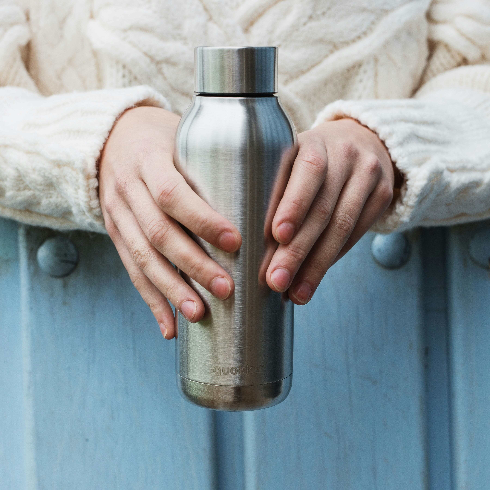
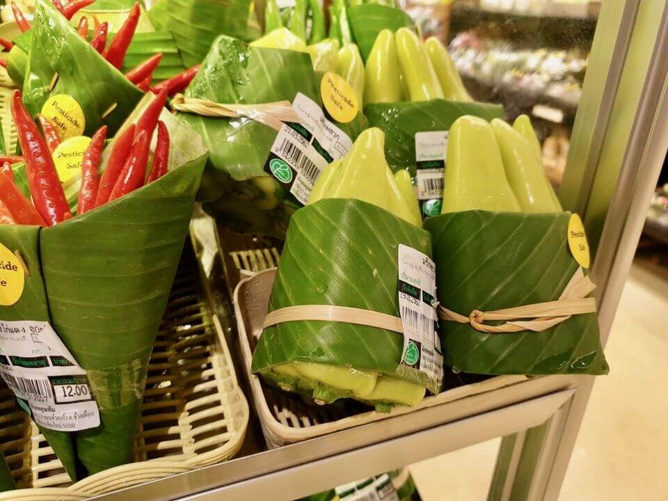

My Aspirations
“Nothing should be overlooked. Get into the details of what you have."
My personal own zero-waste goals

Cutting down on single-use plastic bottles

Learn which products have harmless packaging
Challenges I might face
Its hard to change a habit. I've always misplaced my bottles, so it would be hard for me to get used to having a metal bottle. This challenge can be solved by buying a carabiner and attaching my bottle to my bag, so I can never lose it.